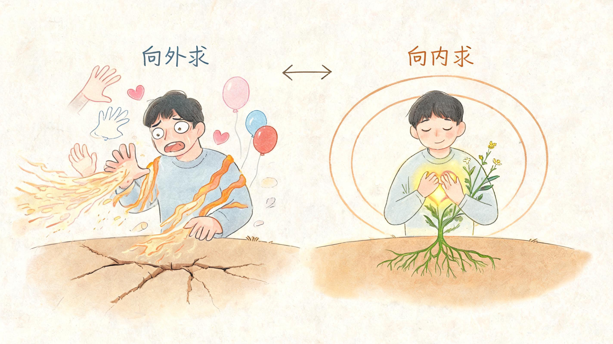
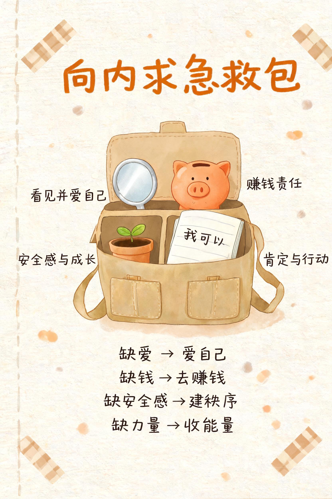
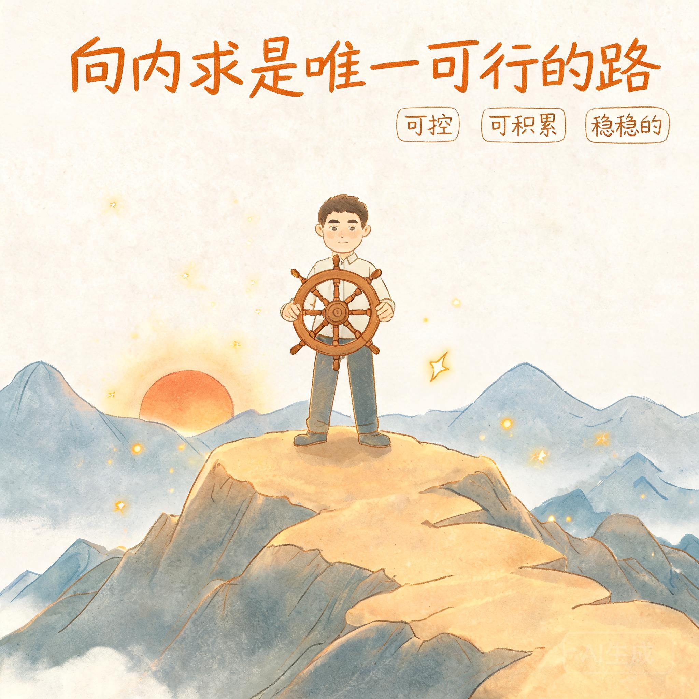

01
为什么必须向内求？

向外求是没有用的。外面的都是虚的，都是泡沫。
人痛苦的根源，是内心有缺口，却总想着从外面找东西来补。
▎外求为什么一定失败
- 他人的爱是破铜烂铁。别人的爱不纯粹、不稳定、不可靠。
- 任何人的爱都取代不了缺位的自爱。只有自己能真正填补。
- 外界没有你想抓取的东西，你想要的都在内里。
- 越外求越空。从外界抓东西不停地补，只会越补越空，能量不断外漏。
- 寄望于别人是没有意义的。总寄望于别人，才会永远停留在原地。
▎受伤的真正意义
爱的目的，是通过受伤来让你看到：任何人的爱都不会超过自爱。
受伤不是惩罚，而是提醒：外求这条路，从根本上走不通。
💡 我的理解
“外求”就像一个漏底的桶。你不停地要关注、要承诺、要安全感，但永远填不满。不是别人给得不够，而是这个桶本身就有洞。
02
向内求，到底是什么？

任何时候都一定把对爱的期许、被爱的需要、赚钱的责任，只完完全全放在自己身上。
向内求不是自私，而是把“照顾自己”当成第一责任。
- 缺爱就爱自己。自己给自己安全感、肯定和照顾。
- 缺钱就做事、赚钱。把精力收回来创造价值。
- 停止期待别人改变，停止向别人索取爱。
- 狠狠爱自己，直到发展出真正爱自己的能力。
为什么只向内求？因为它是唯一可行的、稳稳的、能够真正弥补缺钱缺爱的方式。
💡 我的理解
向内求是唯一可控、可复制、可积累的路。从“等靠要”的受害者心态，变成“我能为自己负责”的创造者心态。这是真正的力量来源。
03
向内求，会带来什么？

向内求会发现能量和爱会源源不断自己生产出来。
❌ 外求时
内心匮乏 → 向外抓取 → 能量外漏 → 更加空虚 → 更痛苦
✅ 内求时
内心饱满 → 不再渴求他人 → 能量聚焦 → 行动力强 → 更富足
- 内心饱满充实，不再空洞匮乏。
- 无比强大、无比自由、节省时间精力、无比有行动力。
- 不再被别人拿捏感情和情绪。
- 自然会努力工作、专心赚钱，让自己生活事业越过越好。
- 越早开始向内求，人生就越早开挂。
💡 我的理解
当你真正开始向内求，你会发现：不是世界变了，是你看待世界的方式变了。别人爱不爱你，不再决定你的价值。你自己就是源头。
04
钱和爱，是同一回事

钱会顺着内心缺爱、不自爱的缺口不断向外流失。
- 你内心缺爱、不自爱时，钱也会顺着那个缺口流走——乱花、被骗、不敢赚。
- 你是这世上爱你的第一人，其余的人都只会是第二爱你的人。
- 老天会惩罚每一个不自己爱自己的人。其实不是在惩罚你，而是在用痛苦逼你回家。
- 修补好内心的缺口，钱和爱都会留下来。
💡 我的理解
钱和爱是同一种能量的两种表现。你不向内求，就会反复撞上同一堵墙。痛苦是信号，不是结局。
05
现在就开始做

- 当你想向别人索取爱、认可、关注时，先停下来问自己：这件事我自己能不能给自己？
- 把“他为什么不爱我”换成“我现在能为自己做什么”。
- 每天做一件爱自己的小事：好好吃饭、睡觉、运动、肯定自己一句。
- 缺爱就爱自己，缺钱就把精力收回来赚钱、提升能力。
- 少纠缠、少期待、少解释，把时间和注意力放回自己身上。
这世上唯一正确的路径就是向内求。你越早这样做，人生就越早开挂。